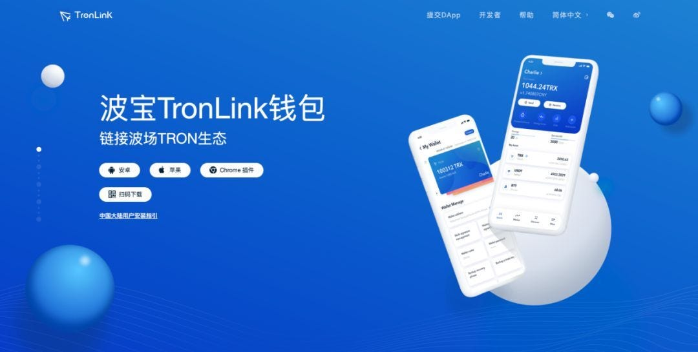

代理IP


購買代理IP

完整的代理IP評論列表
列表按照地區，類型，代理商進行測評，你可以按照你需要了解的方案來訪問它！
常見問題
這裡列舉了一切關於靜態住宅，數據中心，動態代理，住宅代理移動4G代理及相關的知識和使用方案！列舉的問題都是大家常經常問到的一些問題！
什麼是靜態住宅代理？
scok代理IP博客收集了來自互聯網服務商的住宅IP，將他們用作商業用途而不是私人住宅。目標網站通常將這些IP識別爲靜態住宅代理IP，儘管他們實際上托管在服務器上。
什麼是動態代理？
您在代理管理器中配置了自動 IP 輪換，則輪換代理會爲您提供一個新的 IP 地址。IP 地址可以根據預定義的時間段（秒/分鐘）、在一定數量的請求之後或一旦使用的 IP 不再可用時輪換。
靜態代理有哪些優勢？
靜態代理提供了許多優點。由於請求者和目標網站之間隻有一個“躍點”，因此它們執行得更快。最大的優勢之一是可以選擇“終生”保留 IP——隻要您需要，它就會一直屬於您。
靜態代理有哪些缺點？
靜態代理也有一些缺點。根據您的要求，靜態IP地址的供應可能無法滿足數據抓取的所有地理需求。一些購物網站，如亞馬遜，會阻止髮送過多請求的靜態IP地址。
動態代理有哪些優勢？
動態代理具有許多優勢。
首先，切換代理使用來自數百萬家庭和移動設備的 IP 地址。這使得地理定位能夠深入到城市/州級別。
其次，IP切換加上來自住宅/移動設備的合法 IP 的組合使得切換IP很難檢測到。
動態代理有哪些缺點？
動態代理存在三個主要缺點。
動態代理比靜態代理慢。在需要網關代理服務器分配新 IP 地址的過程中有一個額外的“躍點”。
IP 地址池（住宅/移動設備）的帶寬通常低於數據中心或 ISP 代理。
最後，輪換代理通常更昂貴，因爲代理供應商必須採購和維護數百萬個 IP 地址。
什麼是移動代理？
移動代理網絡由移動運營商分配給各個移動設備的真實移動 IP 構建。這些 IP由移動網絡中的真實用戶共享，因此您可以使用 3G/4G 移動連接連接到全球每個國家和城市的真實移動連接，這讓您可以像任何真實移動用戶一樣在不被髮現的情況下查看網絡
爲什麼要使用移動代理？
移動設備的 IP 是通用的，可以支持可以從衆包中受益的用例，以及 GPS 敏感數據。通過移動設備髮出的請求很難跟踪或檢測，這對於希望進行市場研究和其他業務活動的公司來説是一個主要優勢。